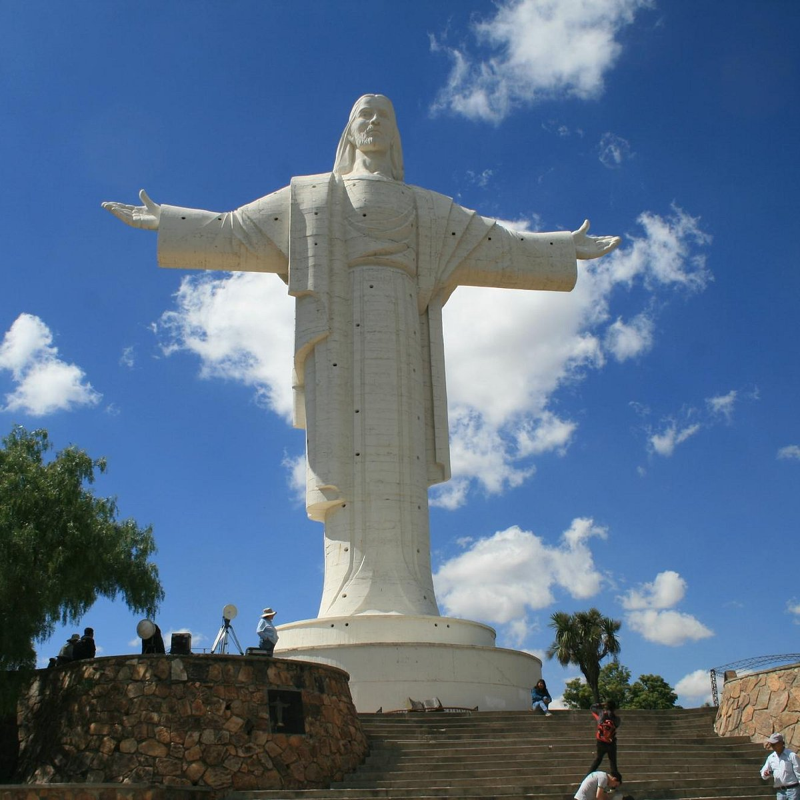
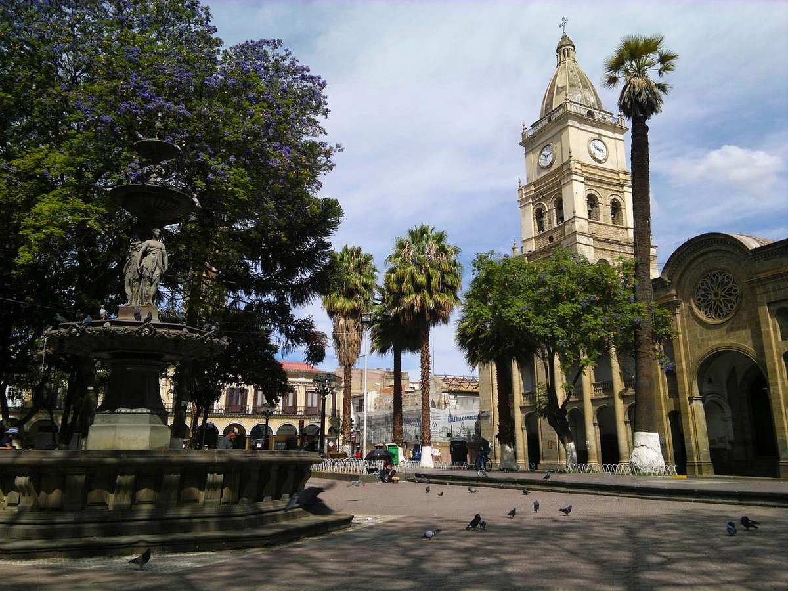
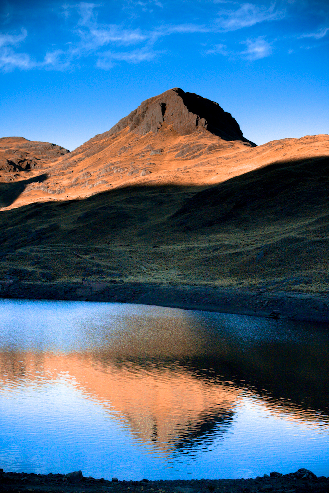
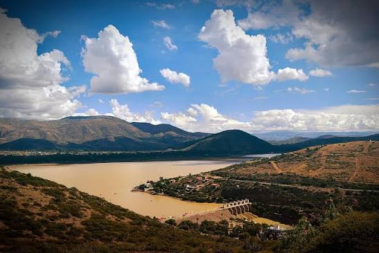
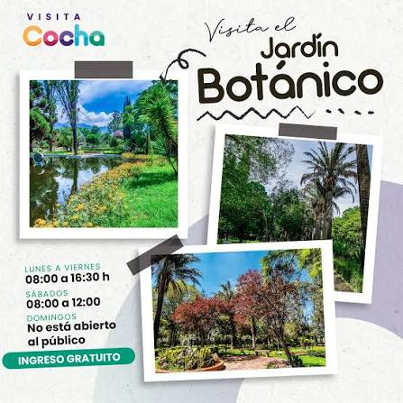

Cochabamba
Descubre la ciudad de la eterna primavera con Trans Azul Bolivia.

TRANS AZUL BOLIVIA
COCHABAMBA
Viaja con comodidad y descubre los principales atractivos turísticos de Cochabamba.
Conoce Cochabamba
Cochabamba es uno de los destinos más importantes de Bolivia. Es conocida por su agradable clima, sus paisajes, su gastronomía y sus atractivos turísticos. Con Trans Azul Bolivia puedes conocer algunos de los lugares más representativos de esta hermosa ciudad.
Lugares turísticos

Cristo de la Concordia
Uno de los símbolos más reconocidos de Cochabamba. Se encuentra en el cerro San Pedro y ofrece una impresionante vista panorámica de la ciudad.

Plaza 14 de Septiembre
Plaza principal de Cochabamba, ubicada en el centro histórico de la ciudad y rodeada de importantes edificios y lugares históricos.
Palacio Portales
Edificio histórico de gran importancia arquitectónica y cultural. Sus jardines y su diseño lo convierten en uno de los atractivos de la ciudad.

Parque Nacional Tunari
Área natural ubicada cerca de Cochabamba, conocida por sus montañas, paisajes y biodiversidad.

Laguna Angostura
Un lugar rodeado de paisajes naturales donde los visitantes pueden disfrutar de un ambiente tranquilo y de la gastronomía local.

Jardín Botánico
Espacio natural dedicado a la conservación de plantas y al disfrute de un ambiente verde dentro de la ciudad.
Descubre Cochabamba
Vive una experiencia diferente recorriendo una de las ciudades más importantes de Bolivia. Disfruta de sus paisajes, cultura, historia y gastronomía.
Información del destino
📍 Destino
Cochabamba, Bolivia
☀ Clima
Conocida por su clima agradable durante gran parte del año.
🍽 Gastronomía
Famosa por platos tradicionales como el pique, silpancho y chicharrón.